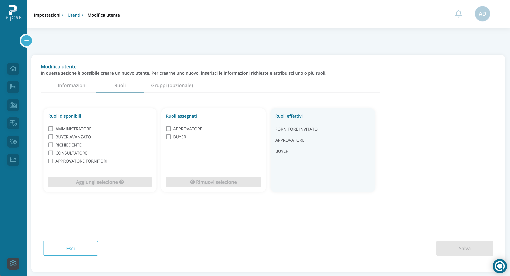

<section class="bg--primary__gray__gradient border-bottom-line px-2 md:px-0 min-h-screen">
    <div class="container-2xl mx-auto md:pb-20 px-5">
        <div class="md:my-24 md:mt-0 mt-24 text-center">
              <h1 class="text-3xl  md:text-3xl lg:text-4xl xl:text-5xl md:leading-tight text-primary text-center px-5 md:px-0">Permessi flessibili e granulari</h1>
              <button class="btn--primary rounded-md hover:font-semibold tracking-widest leading-none relative whitespace-pre ml-5 self-center mt-12" [routerLink]="['../onboarding']" [queryParams]="{type: 'Demo'}" style="min-width: min-content; height: fit-content;" type="button">
                Richiedi una demo gratuita
              </button>
        </div>
            <div class="md:flex row mt-12">
                <div class="md:w-6/12 p-3 mr-8">
                  
                </div>
                <div class="md:w-6/12 p-3">
                  <h1 class="text-xl  md:text-xl lg:text-2xl xl:text-3xl md:leading-tight my-5 text-primary">Assegna ruoli flessibili in base alle policy aziendali.</h1>
                  <p>
                    Procurement24Ore è progettata per essere utilizzata da tutti i membri del tuo team. Gli amministratori possono impostare le autorizzazioni degli utenti a seconda del loro ruolo in azienda e della loro necessità di utilizzo della piattaforma. Concedendo l'accesso diversificato mantieni il controllo e riduci i rischi.
                </p>
                  <br>
                <div class="md:flex mt-5">
                    <button routerLink="../orders" class="btn--secondary__blue w-full mt-4 pr-8 text-sm rounded-md tracking-widest leading-none relative my-4"  type="button">
                        Automazione Ordini <span class="arrow absolute pl-1">→</span>
                    </button>
                    <button routerLink="../approval-flow" class="btn--secondary__blue w-full mt-4 md:ml-5 pr-8 text-sm rounded-md tracking-widest leading-none relative my-4"  type="button">
                        Flussi approvativi <span class="arrow absolute pl-1">→</span>
                    </button>
                    <button routerLink="../suppliers" class="btn--secondary__blue w-full mt-4 md:ml-5 pr-8 text-sm rounded-md tracking-widest leading-none relative my-4"  type="button">
                        Albo Fornitori <span class="arrow absolute pl-1">→</span>
                    </button>
                </div>
                <div class="md:flex">
                  <button routerLink="../analytics" class="btn--secondary__blue md:w-auto w-full mt-4 pr-8 text-sm rounded-md tracking-widest leading-none relative my-4"  type="button">
                    Analitiche <span class="arrow absolute pl-1">→</span>
                </button>
                </div>
                </div>
            </div>
    </div>
</section>